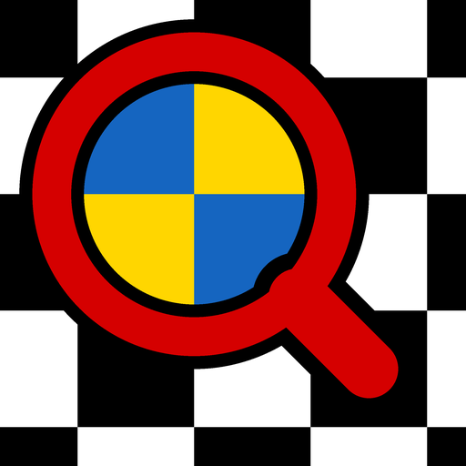

Мелкий текст — крупно
Лупа на камере телефона для людей со слабым зрением. Масштаб одним пальцем, контрастные фильтры и крупные кнопки.
Android 7 и новее · бесплатно · без рекламы · без интернета

Попробуйте фильтры
Так выглядит этикетка в приложении. Нажимайте кнопку «Aa» — фильтры переключаются по кругу, как в приложении.
Капли глазные
Закапывать по 1–2 капли в каждый глаз 3 раза в день.
После вскрытия флакона использовать в течение 28 дней.
Хранить при температуре не выше 25 °C в недоступном для детей месте.
Возможности
Всё нужное — на одной панели крупных кнопок.
Масштаб одним пальцем
Проведите большим пальцем вниз — крупнее, вверх — мельче. Работает и щипок двумя пальцами.
7 контрастных фильтров
Чёрное на белом, белое на чёрном, жёлтое на чёрном и другие. Ненужные можно отключить.
Фонарик и стоп-кадр
Подсветите этикетку, зафиксируйте изображение и рассмотрите его спокойно или отправьте близким.
Фиксация фокуса
Камера перестаёт «искать» резкость, пока вы читаете вблизи.
Для левой руки
Панель кнопок зеркально переставляется для тех, кто держит телефон левой рукой.
Цветные кнопки
У каждой кнопки свой цвет — её легко найти, не разглядывая значок.
Ваши данные остаются у вас
- Приложение не собирает и не передаёт персональные данные.
- Изображение с камеры обрабатывается только на телефоне.
- Нет доступа к интернету, нет рекламы, аналитики и трекеров.